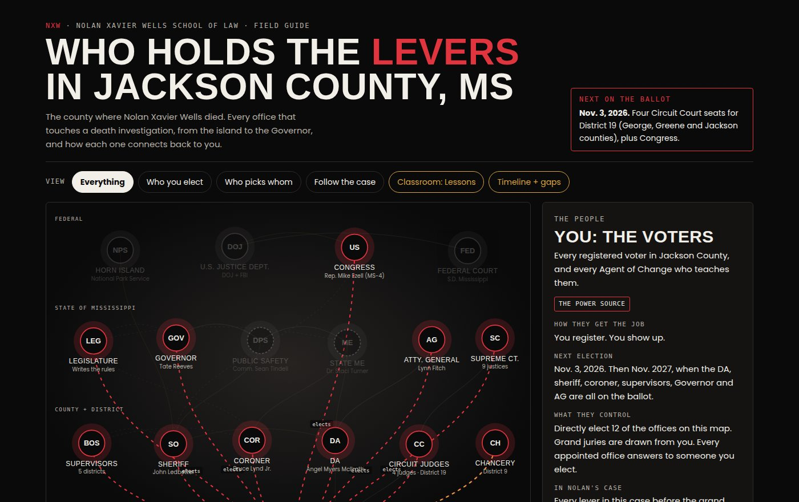
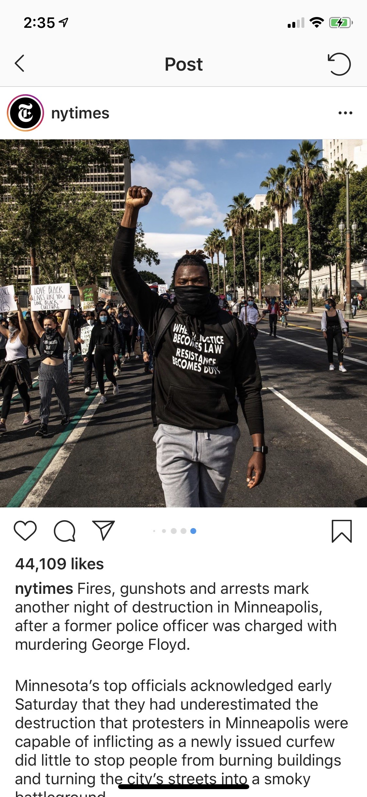
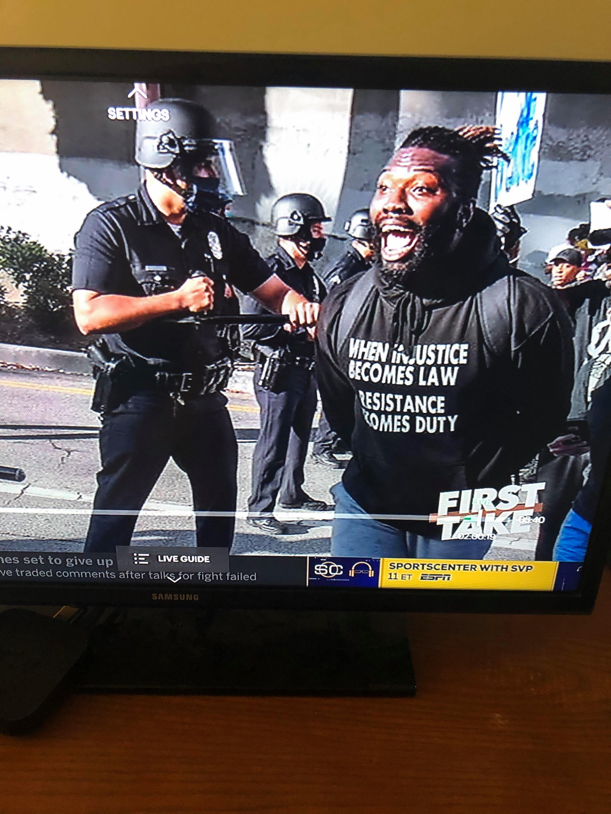
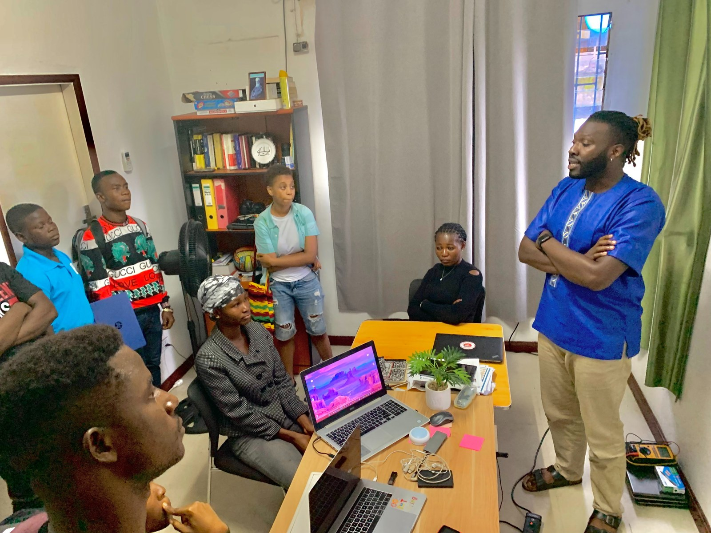
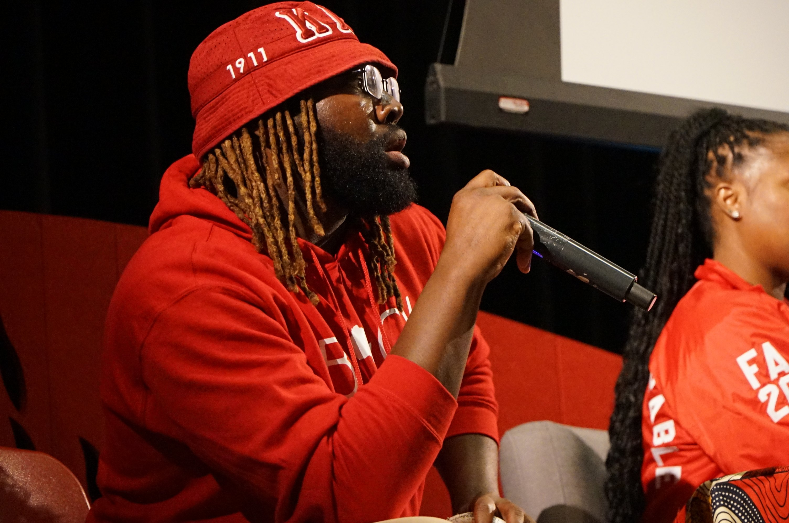

Civic education that turns theory into practice in your own community. We learn the rules. Then we change them.
Plain-language lessons on the justice system, taught from the public record. Probable cause, grand juries, civil suits, discovery.
Records, receipts, and a paper trail. Transparency creates accountability.
Vote. Follow up. Teach somebody else. Our enemy is injustice, not people.
A real Mississippi case, taught one lesson at a time: civil lawsuits, discovery, probable cause, new evidence, and the federal path. Lawrence is an educator, not an attorney. These lessons are not legal advice.

Every office, every connection, every source. An interactive map of one Mississippi county, six lessons, the timeline and the gaps. Free, for everyone. Lesson kits for teachers.
Combined platform insights, 12 months to Oct. 6, 2026.
From Trayvon Martin to Breonna Taylor to George Floyd to Nolan Xavier Wells. The fight has stayed the same. The tools have grown.
Lawrence has stood up for civil and human rights for more than a decade. In the classroom, he teaches his students what injustice looks like and equips them to push back: writing, data collection, storytelling, photography, videography, civic apparel, and more.
On the street, he documents. Los Angeles, May 29, 2020: his photo led the Los Angeles Times investigation into police tactics at the George Floyd protests. The New York Times ran images of him marching. ESPN aired the footage.


Public records, documentation and holding officials accountable.
You leave with: a template to start a paper trail in your community.
Probable cause, grand juries, civil lawsuits, discovery, your rights.
You leave with: a one-page "your rights at each step" card.
How the justice system is structured, using the interactive map.
You leave with: a filled-in chart of who decides what in your county.
Civic power from Fannie Lou Hamer to today. Nonpartisan voter education option.
You leave with: the civic power timeline and a voter-ready checklist.
For HBCUs, high schools, NAACP chapters, churches, veteran groups and community organizations. Keynote, workshop, or classroom series. Full details and the speaker sheet.
A platform Lawrence launched to educate Liberians about the ongoing mismanagement of their public funds, and to teach them how to hold their government accountable.


Across the DMV, Lawrence hosts festivals, conferences, panels and community events. He also performs with DMV City Slickerz.
Learn the law. Document. Vote. Follow up. Never harass. Every like, every repost, every comment helps educate our community.
Schools, colleges, churches, veteran groups, community organizations. Or email directly:
Everything here is free. If the work has been useful to you or your community, you can back it directly.